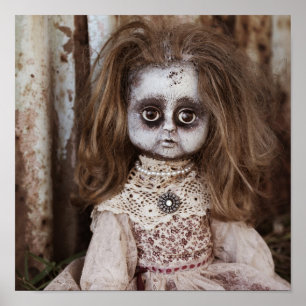
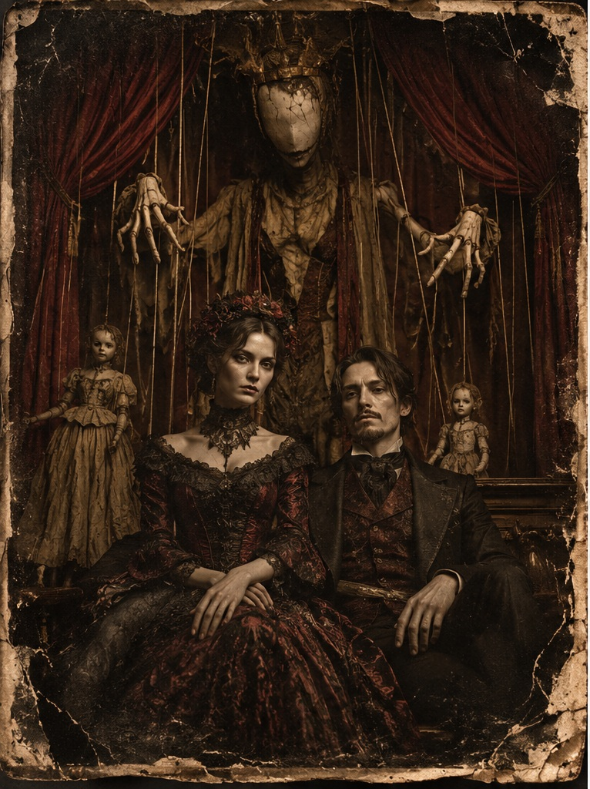
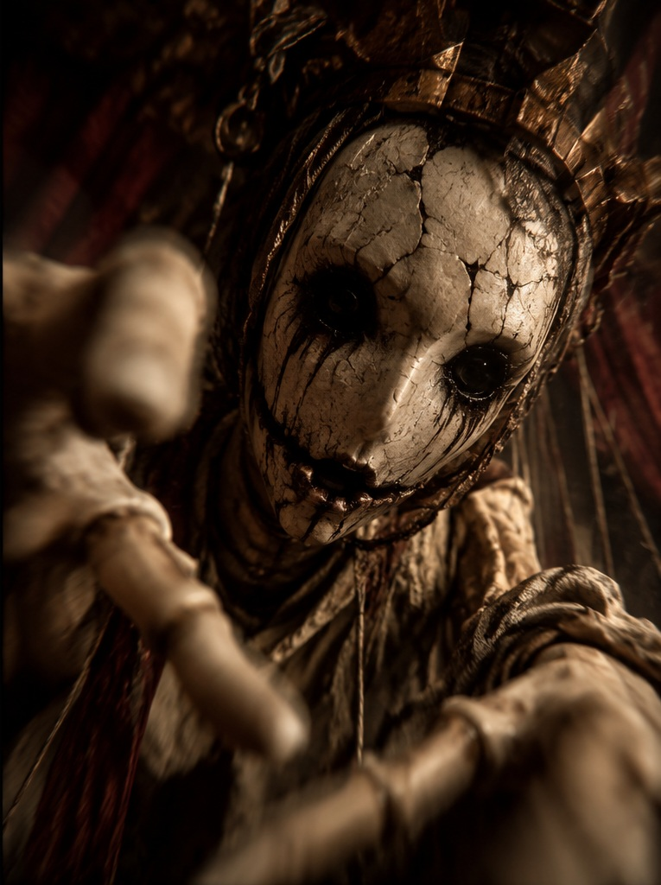

🔦
100%
LICHT AUS · DER VORHANGMANN KOMMT
00:30
◉

🖐️
DIE VORSTELLUNG BEGINNT
Intro überspringen
DU MUSST ZUHÖREN
♟
DAISY BELL
Die Walze dreht sich …
🩸 Vorzeitig verlassen (30 Blut)

Animation überspringen

Ob versteckt oder nicht … ICH KOMME!
Weitergehen
Du hebst die staubige Taschenlampe auf …
Bist du dir sicher, dass sie nicht mehr auf dir sitzt?
Der letzte Brief
Brief vollständig anzeigen
Brief anheben